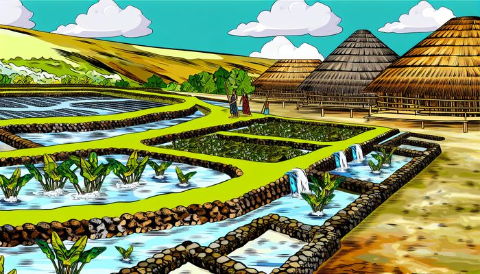
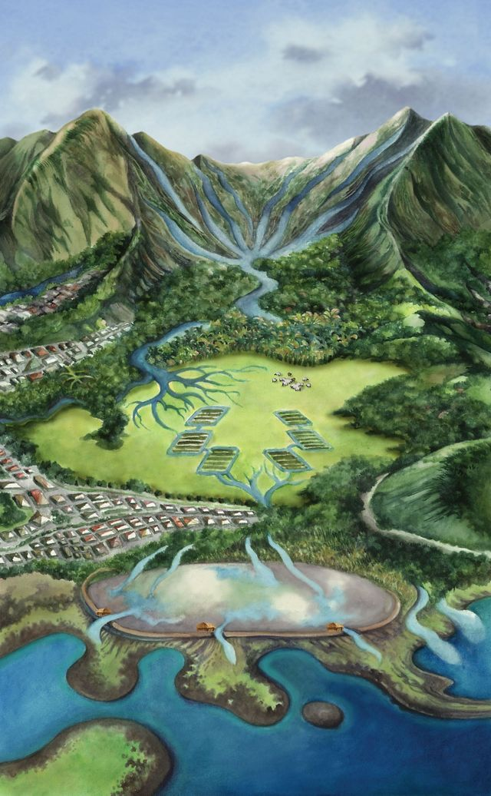

AIA I HEA KA WAI A KĀNE?
Where is the water that keeps us human? The water we need to drink, grow, bloom, and live?
WAI (WATER)
What is wai? And why should you care?
Water connects all life; it connects the towering mountains to the deepest depths of the ocean, it connects tropical rainforest to parched deserts, it connects me to you. Water doesn't care about your skin color, race, identity, or your opinions. We share this commonality that keeps us human (or however you identify).

Kanaka maoli (Native Hawaiians) depend on water. Life revolves around it: for planting, for thirst, for fishing, for fun, for the breathe of life, everything and anything. The word waiwai translates to value, worth, wealth, importance, benefit, valuable, rich, costly, which stems from the word wai (water).

Native Hawaiians have been fighting to take control of Maui's water rights. Many kamaʻāina, Native Hawaiians, and community activists say that fresh water in West Maui has been mismanaged for more than 180 years, because the rich want to get richer without the care of polluting other lives.